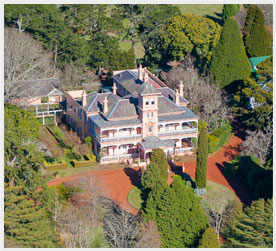

<!DOCTYPE html PUBLIC "-//W3C//DTD XHTML 1.0 Transitional//EN" "http://www.w3.org/TR/xhtml1/DTD/xhtml1-transitional.dtd">
<html xmlns="http://www.w3.org/1999/xhtml">
<head>
<link href='http://fonts.googleapis.com/css?family=Abel' rel='stylesheet' type='text/css'>
<meta http-equiv="Content-Type" content="text/html; charset=UTF-8" />
<title>Retford Park Bowral</title>
<link type="text/css" href="style.css" rel="stylesheet"/>
</head>

<body>
<div class="wrapper">
  <div class="logo"><a href="index.html"></a>
  </div>
  <div class="content">
    <h1>Retford Park Bowral<br />
      1887 to the future</h1>
    <h2>A plan to preserve our local history</h2>
    <p>James Fairfax AC believes that Retford Park should be preserved for the enjoyment and benefit of future generations, particularly those of the local district. Accordingly Mr Fairfax, well recognised for his philanthropic gifts to the arts, medical research and education, has long planned to bequeath Retford Park for the benefit of the community, but recognises funding will be needed for the long term maintenance of the property. In order to achieve this, planning is underway for a proposed residential development of the land outside the heritage area, the realisation of which will secure the integrity of Retford Park for the pleasure and interest of generations to come.</p>
<h2>A history with a rich culture</h2>
      <p>Retford Park is currently the home of James Fairfax AC, a former Chairman and Director of the publicly listed media group John Fairfax Limited. The European ownership of the land dates from 1821 when Governor Macquarie granted Edward Riley, two parcels of land, which included Retford Park (which he originally named &quot;Bloomfield&quot;). The property remained in the Riley family until the 1880's when it was acquired by Samuel Hordern, second son of Anthony Hordern, who renamed it &quot;Retford Park&quot; in recognition of family links to Retford in Nottinghamshire, England. </p>
      <p><br />
      The Retford Park house was completed in 1887 and included horse and cattle facilities. Samuel Hordern and his son, Sir Samuel Hordern, were skilled cattle and horse breeders and won numerous prizes at the Royal Agricultural Society's Easter Show. The last Hordern resident, Samuel Hordern III, died in a car accident in 1960 and an American owned company, King Ranch, briefly owned the property thereafter.. </p>
  <h2>Recent history</h2>
      <p>James Fairfax bought the house and 20 acres from King Ranch in 1964 and set about redecorating the house with advice from Leslie Walford and renovating and extending the garden under advice from renowned English landscape architect, John Codrington. An eminent Melbourne architect, Guilford Bell, designed the pool, pool pavilion and aviaries and other features around the house. Over the years architecturally sympathetic extensions by architect Espie Dods have been added to the house.  In more recent years, Melbourne landscape architect, David Wilkinson, has designed more features for the garden, including the Knot Garden, the Green Room and the Centennial Canal. During James Fairfax's occupancy of Retford Park he has played host to many notable visitors, including members of the British and European royal families, Australian governors general and state governors, prime ministers and other high ranking politicians from both Australia and overseas, together with numerous renowned artists and representatives of arts fraternities worldwide. The house and garden, part of the heritage area of 32ha, are valued Australian treasures and are an important narrative in the development of the Wingecarribee Shire. </p>
  </div>

	<div class="nav">
	  
    <ul>
      <a href="index.html">HOME</a>
  </ul>
		<ul></ul>
    <ul>
      <a href="index.html">PRESERVATION</a>
  </ul>
		<ul></ul>
		<ul>
		  <a href="index.html">GALLERY</a>
    </ul>
		<ul></ul>
		<ul>
		  <a href="index.html">TEAM</a>
    </ul>
		<ul></ul>
	  <ul>
	    <a href="contact.html">CONTACT</a>
</ul>
  			<ul></ul>
	  
	</div>
</div>
      <div class="footer">
        <div class="footer-content">
          <div class="footer-content-nav"> <ul>
            <a href="index.html">Home</a> | 
          </ul><ul>
            <a href="index.html">Preservation</a> | 
          </ul><ul>
            <a href="index.html">Gallery</a> | 
          </ul><ul>
            <a href="index.html">Team</a> |
          </ul>  
           <a href="contact.html">Contact</a>
          </div>
          <div class="copyright">&copy; 2012 Retford Park Bowral</div>
        </div>
      </div>

</body>
</html>
